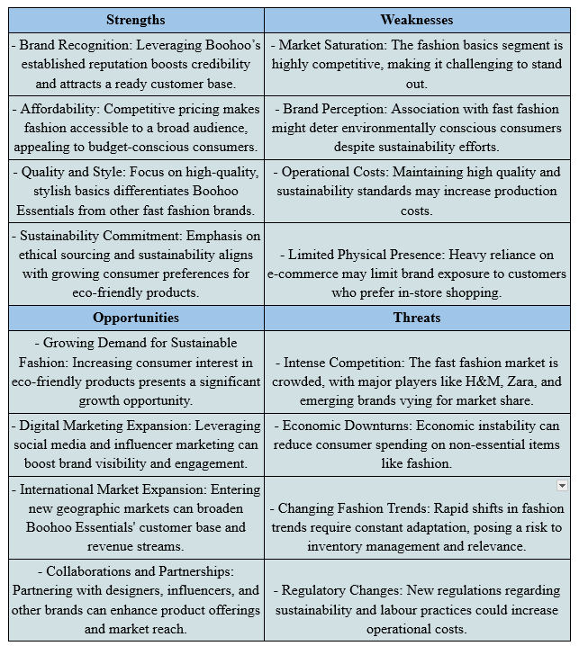

Executive Summary
The Executive Summary provides Boohoo Essentials as a possible brand that is a sub-brand within Boohoo that aims to provide stylish and affordable everyday clothes. With Boohoo's established structure and customer base The new brand is focused on high-end essentials for men and women like t-shirts, jeans as well as leggings and loungewear. Boohoo Essentials aims to provide a need in the market by giving trendy basics, and continuing to adhere to eco-friendly practices. The initial capital investment was £1 million. It is expected to earn £5 million by the beginning of the calendar year. In the second as well as £15 million by the end of year 3 The company anticipates an explosive growth. The plan will be a gradual plan for business that will include the development of new products, strategies to market as growth strategies. Boohoo Essentials seeks to build its credibility as a trusted brand which is renowned for its simplicity to use, as well as its design and ethical standards within the fashion world.
Proposal
2.1 Business Summary
Boohoo Essentials can be described as a new brand within Boohoo that has been strategically placed so that it can meet the growing demand for fashionable and budget-friendly clothing appropriate for daily wear. Based on Boohoo's dependable system as well as its large number of customers, Boohoo Essentials will offer an enormous selection of clothes that are appropriate for both men and ladies. The collection comprises a wide array of items, including t-shirts, jeans as well as jean jackets, loungewear and more. The products are designed to meet the requirements of today's people who appreciate fashion and are affordable. Its focus is on high-end and fashionable fashions, Boohoo Essentials aims to make its mark in the market with affordable essentials which are popular among the targeted group of consumers. Its mission is to disrupt the marketplace by offering high-end essentials that reflect the latest trends but still adhering to Boohoo's commitment to ethical and sustainable ways of purchasing. With the advantage of Boohoo's resources along with its knowledge Boohoo Essentials seeks to make it a prominent retailer in the online fashion market. It is renowned for its accessibility as well as its ethical and fashion-forward approach.
2.2 Business Aims & Mission Statement
The financial report for Boohoo Essentials outlines the projected earnings and the investment plans of the brand that is currently being considered. Its initial capital investment for Boohoo Essentials is estimated at £1 million. The report covers a variety of areas, like the development of the products and operational and marketing expenses. It's crucial in establish a strong presence for the brand in the market, and also to warrant the successful launch. To forecast revenue, Boohoo Essentials anticipates sales of £5 million in the first year of operation. The optimistic estimation is based on a thorough study of the market which indicates a huge demand for stylish and affordable daily clothes in the target segment that comprises. When the brand gains popularity and credibility from the consumers, and customers, sales will improve substantially and reach £15 millions by this third quarter. It's important to recognize the fact that these predictions are based on an in-depth analysis of the trends within the market, as well as the consumers' behavior and market competition within the field of the fashion industry. Although the initial investment may pose the possibility of financial risk however the potential for significant earnings and potential growth for the future help in providing Boohoo Essentials with a lucrative business option that is a good fit for Boohoo.
2.3 Business Planning
-
2.3.1 Phase 1: Development and Design (8 months)
Beginning in the beginning, Boohoo Essentials will embark into a rigorous investigation and program of development...
-
2.3.2 Phase 2: The Prototyping phase and the Test phase (6 months)
The prototyping phase is the point at which Boohoo Essentials will develop samples from its product line that will be tested and improved...
-
2.3.3 Phase 3: The preparation for launch (4 months)
The release date close to hand, Boohoo Essentials will intensify its marketing and branding efforts to create excitement and excitement among its target audience...
-
2.3.4 Phase 4: Launch and Market Penetration (Ongoing)
With the launch of Boohoo Essentials, the focus shifts to increasing the sales of Boohoo Essentials and the brand's recognition...
-
2.3.5 Phase 5: Expansion and Diversification (Years 2-5)
In the near future, Boohoo Essentials will explore possibilities of expansion and diversification as well as diversification...
2.4 Elevator Pitch
Boohoo Essentials provides fashion-conscious consumers with affordable, fashionable items that are appropriate for daily use. We've put together the best essential items like t-shirts, pants, jeans and leggings along with loungewear. specifically designed for those looking for trendy fashion with no compromise to premium quality or ecological sustainability. With Boohoo's vast infrastructure and commitment to sustainable purchasing, Boohoo Essentials provides accessible alternatives for those who are conscious about their purchases. With a focus on style as well as affordability, we aim to change the basic market items and establish ourselves as your primary retailer for everyday clothing. Join us in redefining the way you buy basics for your wardrobe by offering an unparalleled mix of value along with fashion and sustainable. Get your wardrobe elegant by shopping with Boohoo Essentials. A place where ethics and style meet.
3. Marketing Mix
3.1 Target Consumer/Customer Profile
Boohoo Essentials targets fashion-forward individuals aged 18-35 years older who seek trendy and stylish everyday clothing with a price that is affordable. Customers appreciate style high-end quality and style along with the convenience...
3.2 Product/Services
Boohoo Essentials offers a carefully selected selection of essential clothing products designed to meet the demands of modern customers...
3.3 Price Band Matrix
Boohoo Essentials offers a competitive cost that ensures access to our target audience and also ensures that our business is profitable...
3.4 Distribution Strategy
Boohoo Essentials employs a multi-faceted distribution strategy to reach those we want to reach with a high degree of energy...
3.5 Market Position
Boohoo Essentials occupies a unique spot in the fashionable retail market with its low-cost but stylish everyday necessities to customers...
3.6 Competitor Evaluation
In order to evaluate the competition in the fashion retail industry, Boohoo Essentials identifies several major players like famous brands within the world of fashion, such as H&M, Zara, and Forever 21...
4. Marketing/Branding Strategy
4.1 Branding Strategy
Boohoo Essentials' branding strategy is founded on the principles of fashion, affordability and sustainability...
4.2 Experiential Retailing & Online Strategy
Boohoo Essentials implements an integrated experiential retailing approach and online shopping to boost the brand's visibility...
4.3 Marketing Strategy
Boohoo Essentials' marketing strategy was developed to increase consumers' awareness of the brand, and to encourage customers to buy in order to increase sales...
5. SWOT Analysis
6. Unique Selling Point (USP)
Boohoo Essentials' Unique Selling Point (USP) is the unified combination of fashion, affordability, and sustainability. They offer top-quality products at affordable prices, prioritizing ethical sourcing and sustainable practices that appeal to eco-conscious customers without compromising on quality or style. With a focus on stylish and versatile basics, shoppers can create an elegant wardrobe through the incorporation of trendy yet timeless accessories. Leveraging Boohoo's established reputation for quality and vast network, Boohoo Essentials ensures a safe and enjoyable shopping experience both online and offline. In a market saturated with fleeting trends, Boohoo Essentials distinguishes itself by offering not only affordable prices and fashionable styles but also a commitment to sustainable living. This unique combination positions Boohoo Essentials as a top choice for shoppers seeking affordable, fashionable, stylish, and eco-friendly clothing.
7. Conclusion
In conclusion, Boohoo Essentials is poised to become a major player in the realm of basic fashion items, thanks to its distinctive blend of style, affordability, and long-term sustainability. The comprehensive business strategy we've developed includes strategic plans for growth and expansion into new markets, ensuring that our products can meet the evolving needs of our target audience. Through meticulous research, honest design, and development of our products, along with robust marketing strategies, Boohoo Essentials will establish itself as a reputable company offering high-end, stylish basics. With a focus on ethically sourced materials and environmental sustainability, we will meet consumer expectations and set ourselves apart from the competition.
The multi-channel distribution strategy, combining extensive online presence with interactive retailing, will enhance the customer experience and drive sales. With our commitment to sustainable clothing, Boohoo Essentials is poised to lead the fashion market by offering trendy and eco-friendly garments to today's consumers.
8. References
- Karell, E. and Niinimäki, K., 2020. A mixed-method study of design practices and designers’ roles in sustainable-minded clothing companies. Sustainability, 12(11), p.4680.
- Khan, I.S., Ahmad, M.O. and Majava, J., 2021. Industry 4.0 and sustainable development: A systematic mapping of triple bottom line, Circular Economy and Sustainable Business Models perspectives. Journal of Cleaner Production, 297, p.126655.
- Legere, A. and Kang, J., 2020. The role of self-concept in shaping sustainable consumption: A model of slow fashion. Journal of Cleaner Production, 258, p.120699.
- Mehdipour, P., 2021. How Sustainable Fashion Brands Communicate with Online Customers in Comparison with Fast Fashion Brands (Master’s thesis, University of Waterloo).
- Bielawska, K. and Grebosz-Krawczyk, M., 2021. Consumers’ choice behaviour toward green clothing.
- Camargo, L.R., 2018. Paving the way to ultra-fast fashion: an exploratory research (Doctoral dissertation).
- Nassar, M., Goddard, T. and Freeman, R., 2023. Walk the Talk: The Boohoo Case Study. Journal of Macromarketing, 43(2), pp.274-282.
- Dale, R., 2022. How Can Fast Fashion Be Sustainable?.
- McLaughlin, E., 2021. Fast Fashion from a Buddhist Perspective.
- Carvalho, A.M.D.S.P.D., 2022. Fashion industry scandals: The media coverage afterward (Master’s thesis).
- Camargo, L.R., 2018. WHAT FAST FASHION CAN LEARN FROM THE ULTRA-FAST (Doctoral dissertation, Fundação Getúlio Vargas).
- Stringer, T., 2023. Ethical consumption in a fast fashion world (Doctoral dissertation, Queensland University of Technology).